This notebook shows how to use history matching in manual mode, where you control each iteration individually. Manual mode lets you:
Inspect results before committing to the next iteration
Change feature selection or emulator type between iterations
Evaluate emulator diagnostics at each step
Gain a detailed understanding of what the algorithm is doing
For the fully automated one-call workflow, see Basic Workflow.
import numpy as npimport pandas as pdimport matplotlib.pyplot as pltimport historymatching as hmimport logging; logging.getLogger("historymatching").propagate =False# keep INFO logs out of the rendered docsfrom model import SIR, generate_observed_data%matplotlib inline
WARNING: All log messages before absl::InitializeLog() is called are written to STDERR
I0000 00:00:1794250763.531593 2706 port.cc:153] oneDNN custom operations are on. You may see slightly different numerical results due to floating-point round-off errors from different computation orders. To turn them off, set the environment variable `TF_ENABLE_ONEDNN_OPTS=0`.
I0000 00:00:1794250763.532214 2706 cudart_stub.cc:31] Could not find cuda drivers on your machine, GPU will not be used.
I0000 00:00:1794250763.568117 2706 cpu_feature_guard.cc:227] This TensorFlow binary is optimized to use available CPU instructions in performance-critical operations.
To enable the following instructions: AVX2 AVX512F AVX512_VNNI AVX512_BF16 FMA, in other operations, rebuild TensorFlow with the appropriate compiler flags.
WARNING: All log messages before absl::InitializeLog() is called are written to STDERR
I0000 00:00:1794250764.473529 2706 port.cc:153] oneDNN custom operations are on. You may see slightly different numerical results due to floating-point round-off errors from different computation orders. To turn them off, set the environment variable `TF_ENABLE_ONEDNN_OPTS=0`.
I0000 00:00:1794250764.473927 2706 cudart_stub.cc:31] Could not find cuda drivers on your machine, GPU will not be used.
/home/runner/work/historymatching/historymatching/.venv/lib/python3.13/site-packages/gpflow/versions.py:1: UserWarning: pkg_resources is deprecated as an API. See https://setuptools.pypa.io/en/latest/pkg_resources.html. The pkg_resources package is slated for removal as early as 2025-11-30. Refrain from using this package or pin to Setuptools<81.
import pkg_resources
Generate Synthetic Observed Data
We define true parameter values and generate synthetic incidence data that we will try to recover through history matching.
parameter_bounds = {"beta": (0.3, 3.0), # narrower than 01 — avoids extinction / burn-through"gamma": (0.1, 1.0),}# One observation per day of the incidence time seriesobservations_dict = {f"incidence_{day}": (value, 10.0)for day, value inenumerate(data["incidence"])}print(f"Parameter space: {parameter_bounds}")print(f"Observations: {len(observations_dict)} features (one per day)")
Parameter space: {'beta': (0.3, 3.0), 'gamma': (0.1, 1.0)}
Observations: 20 features (one per day)
Define Simulation Function
The simulation function must accept a DataFrame of parameter samples and return a DataFrame of outputs. Column names must match the observation keys.
def sir_model_wrapper(points: pd.DataFrame) -> pd.DataFrame:"""Run SIR for each row and return incidence time series.""" results = []for parameters in points.itertuples(): model = SIR( beta=parameters.beta, gamma=parameters.gamma, s0=population_size - n_seed_infections, i0=n_seed_infections, ) results.append(pd.Series(model.get_incidence()))return pd.concat(results, axis=1).T.add_prefix("incidence_").reset_index(drop=True)
# Test with a few random points to confirm the wrapper worksnp.random.seed(42)test_points = pd.DataFrame({"beta": np.random.uniform(0.1, 5.0, 5),"gamma": np.random.uniform(0.1, 1.0, 5),})test_results = sir_model_wrapper(test_points)print(f"Output shape: {test_results.shape} (5 runs x {test_results.shape[1]} days)")
Output shape: (5, 20) (5 runs x 20 days)
Configure the History Matching Engine
We use the builder to configure the engine with a manually chosen feature for the first iteration. Feature selection can be updated before each subsequent iteration.
Emulator type: BayesLinear
... General information:
Number of parameters = 2
Number of samples (total) = 500
Number of training samples = 375
Number of testing samples = 125
... Emulator configuration:
Bayes Linear Emulator
Nugget: 1e-06
sigma^2: 518731336.618745
NLL: -482.3834
Optimizer: converged
theta (correlation lengths):
beta: 0.1827
gamma: 1.2233
beta (regression coefficients):
intercept: 334.434423
beta: -324.712351
gamma: -109.883064
This emulator has not been tested yet
emulator_1.test()emulator_1.plot_diagnostics()
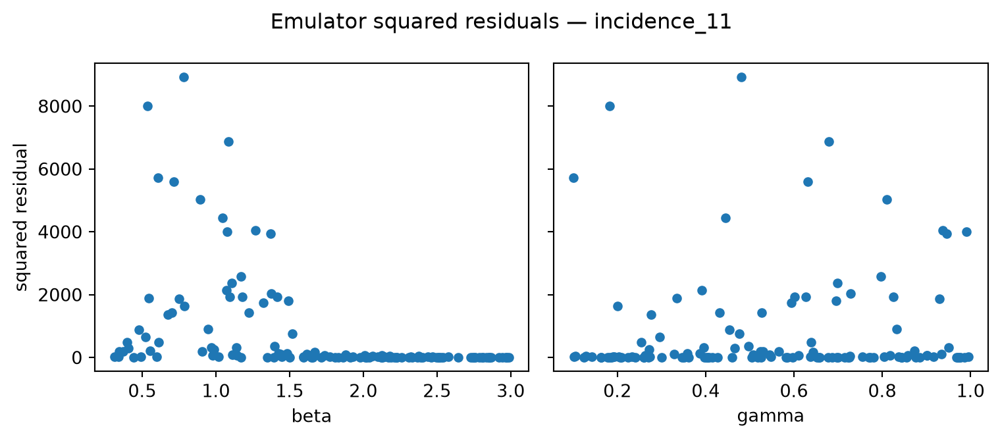
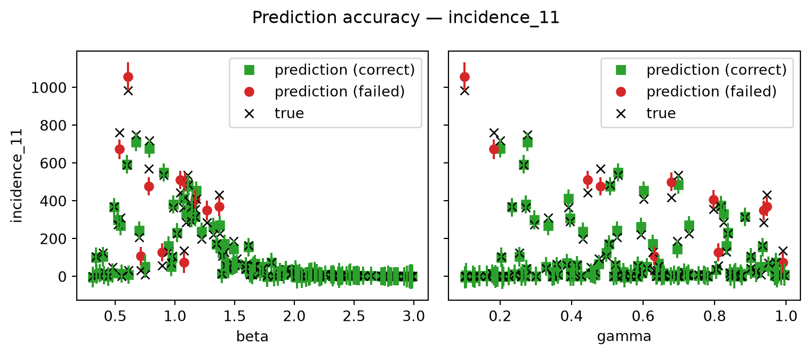
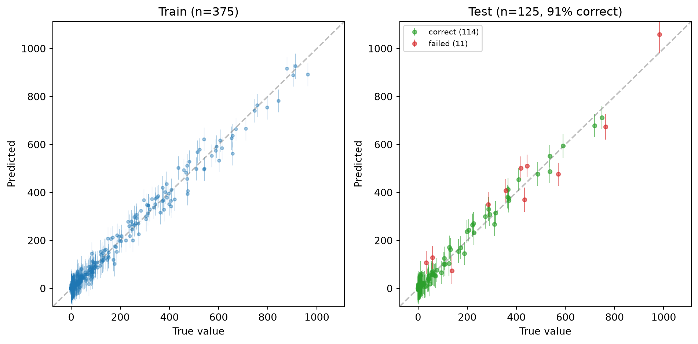
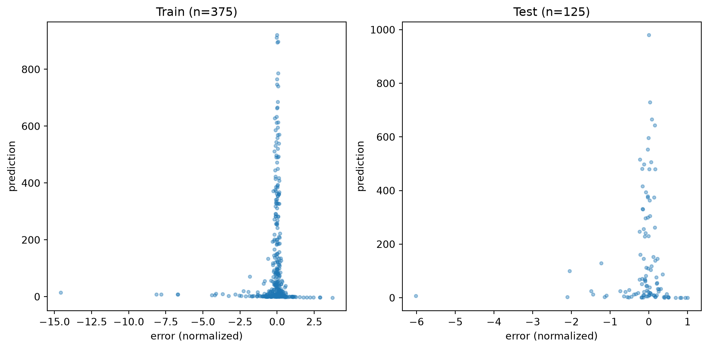
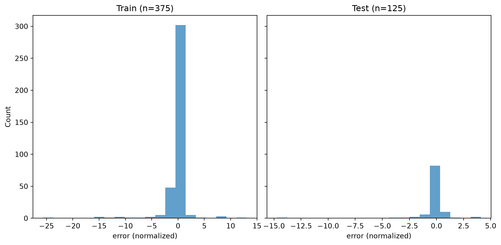
Inspect Parameter Space After Iteration 1
samples_1 = result_1.samplespending_2 = engine.get_pending_next_samples()fig, axes = plt.subplots(1, 2, figsize=(12, 4))ax = axes[0]ax.scatter(samples_1["beta"], samples_1["gamma"], alpha=0.6, s=20, color="gray", label="Iteration 1 samples")ax.scatter(pending_2["beta"], pending_2["gamma"], alpha=0.6, s=20, color="green", label="Pending for iteration 2")ax.axvline(beta_true, color="red", linestyle="--", linewidth=2, label=f"True beta={beta_true}")ax.axhline(gamma_true, color="red", linestyle="--", linewidth=2, label=f"True gamma={gamma_true}")ax.set_xlabel("beta")ax.set_ylabel("gamma")ax.set_title("Parameter space after iteration 1")ax.legend(fontsize=8)ax.grid(True, alpha=0.3)ax = axes[1]sims = sir_model_wrapper(samples_1)days = np.arange(sims.shape[1])obs_vals = data["incidence"].values# Plot each sim as a thin gray line (no legend entries)for row in sims.values: ax.plot(days, row, color="gray", alpha=0.15, linewidth=0.8)ax.plot(days, obs_vals, "ro-", linewidth=2, markersize=4, label="Observed")# Highlight the emulated time-point(s) for this waveemulated_days = [int(f.split("_")[1]) for f in result_1.emulated_outputs]ax.scatter(emulated_days, obs_vals[emulated_days], s=100, zorder=5, facecolors="none", edgecolors="red", linewidths=2, label="Emulated day(s)")ax.set_xlabel("Day")ax.set_ylabel("Incidence")ax.set_title("Simulated trajectories vs observed")ax.legend(fontsize=8)ax.grid(linestyle=":")plt.tight_layout()plt.show()print(f"Pending samples for iteration 2: {len(pending_2)}")print(f" beta range: [{pending_2['beta'].min():.3f}, {pending_2['beta'].max():.3f}]")print(f" gamma range: [{pending_2['gamma'].min():.3f}, {pending_2['gamma'].max():.3f}]")
# Accept the first iterationengine.commit_step()print(f"Iteration 1 committed. Current iteration: {engine.current_iteration}")
Iteration 1 committed. Current iteration: 1
Iteration 2
Switch to an earlier time point — day 3 is on the rising limb of the epidemic, so it should constrain different parameter combinations than day 11 (descending limb).
emulator_2 = result_2.get_emulator("incidence_3")emulator_2.test()# Show GPflow model summary — check likelihood.variance for overconfidence# (near-zero noise variance → CIs collapse → many "failed" predictions)emulator_2.info()emulator_2.plot_diagnostics()
... General information:
Number of parameters = 2
Number of samples (total) = 500
Number of training samples = 375
Number of testing samples = 125
... Emulator configuration:
Bayes Linear Emulator
Nugget: 1e-06
sigma^2: 5172362131.850215
NLL: -513.2262
Optimizer: converged
theta (correlation lengths):
beta: 3.9842
gamma: 8.6370
beta (regression coefficients):
intercept: 134.405064
beta: 1023.997866
gamma: -481.546337
... Performance results:
MSE = 5326.353136024141
L-inf = 222.82281880416053
L-1 = 52.83353839880562
R2 = 0.9501713930260873
AIC = 1076.5527585435773
BIC = 1082.209386018182
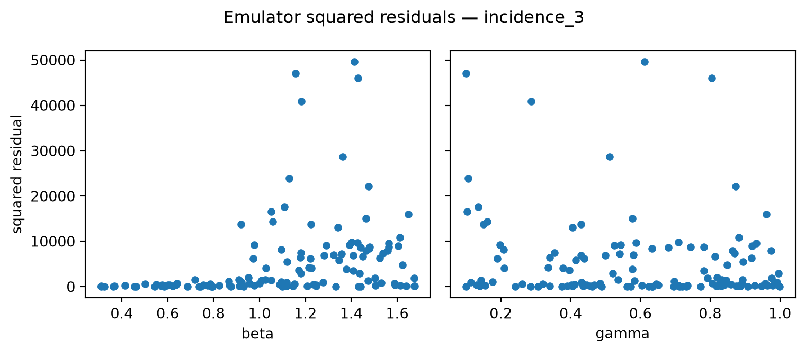
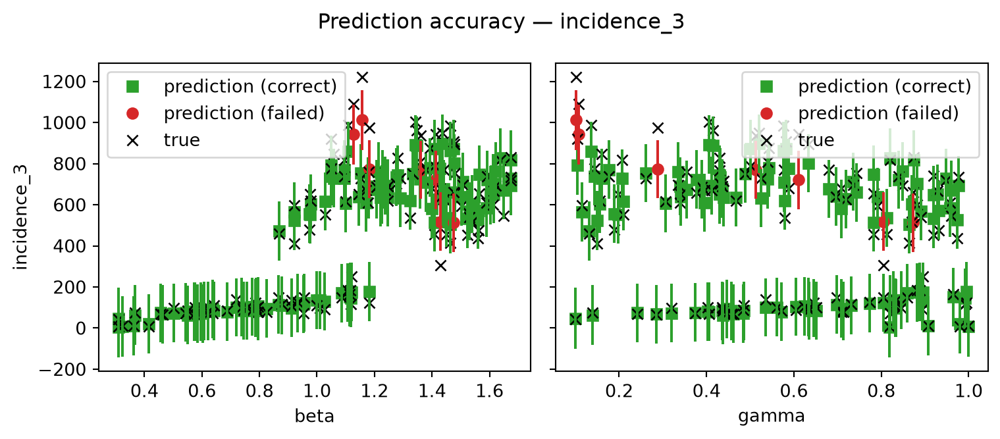
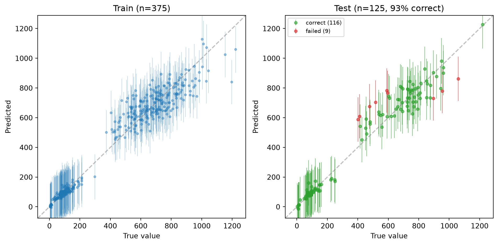
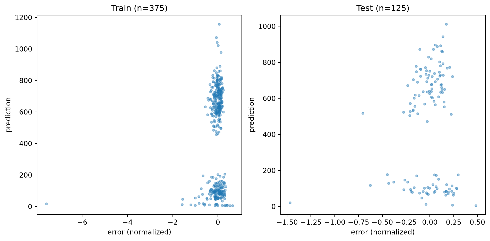
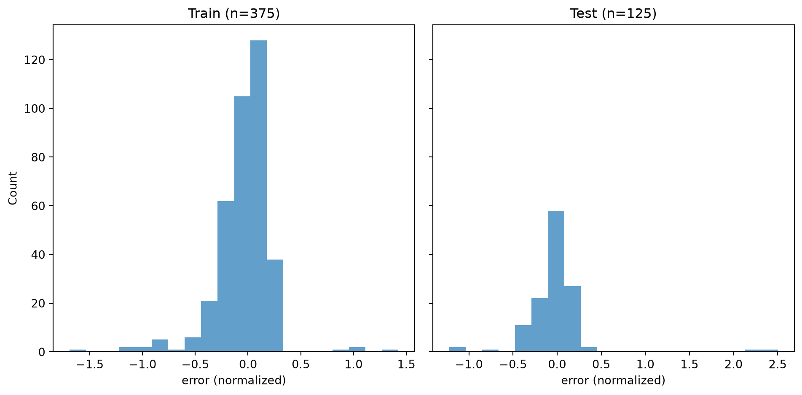
Parameter Space After Iteration 2
# result_2.samples = training data for iter 2 (passed iter 1 only)# pending_3 = samples that passed BOTH iter 1 and iter 2 emulatorspending_3 = engine.get_pending_next_samples()fig, axes = plt.subplots(1, 2, figsize=(12, 4))ax = axes[0]ax.scatter(result_2.samples["beta"], result_2.samples["gamma"], alpha=0.3, s=15, color="lightgray", label="Iter 2 training (passed iter 1)")ax.scatter(pending_3["beta"], pending_3["gamma"], alpha=0.7, s=20, color="steelblue", label="NROY after iter 2")ax.axvline(beta_true, color="red", linestyle="--", linewidth=2, label=f"True beta={beta_true}")ax.axhline(gamma_true, color="red", linestyle="--", linewidth=2, label=f"True gamma={gamma_true}")ax.set_xlabel("beta")ax.set_ylabel("gamma")ax.set_title("Parameter space after iteration 2")ax.legend(fontsize=8)ax.grid(True, alpha=0.3)ax = axes[1]sims_nroy = sir_model_wrapper(pending_3)days = np.arange(sims_nroy.shape[1])obs_vals = data["incidence"].valuesfor row in sims_nroy.values: ax.plot(days, row, color="steelblue", alpha=0.15, linewidth=0.8)ax.plot(days, obs_vals, "ro-", linewidth=2, markersize=4, label="Observed")# Highlight all emulated time-points so far (iterations 1 + 2)all_emulated =set()for r in [result_1, result_2]: all_emulated.update(int(f.split("_")[1]) for f in r.emulated_outputs)all_emulated =sorted(all_emulated)ax.scatter(all_emulated, obs_vals[all_emulated], s=100, zorder=5, facecolors="none", edgecolors="red", linewidths=2, label="Emulated day(s)")ax.set_xlabel("Day")ax.set_ylabel("Incidence")ax.set_title("NROY trajectories after 2 iterations")ax.legend(fontsize=8)ax.grid(linestyle=":")plt.tight_layout()plt.show()print(f"NROY samples after iteration 2: {len(pending_3)}")print(f" beta range: [{pending_3['beta'].min():.3f}, {pending_3['beta'].max():.3f}]")print(f" gamma range: [{pending_3['gamma'].min():.3f}, {pending_3['gamma'].max():.3f}]")beta_ok = pending_3["beta"].min() <= beta_true <= pending_3["beta"].max()gamma_ok = pending_3["gamma"].min() <= gamma_true <= pending_3["gamma"].max()print(f"True beta in plausible region: {'Yes'if beta_ok else'No'}")print(f"True gamma in plausible region: {'Yes'if gamma_ok else'No'}")
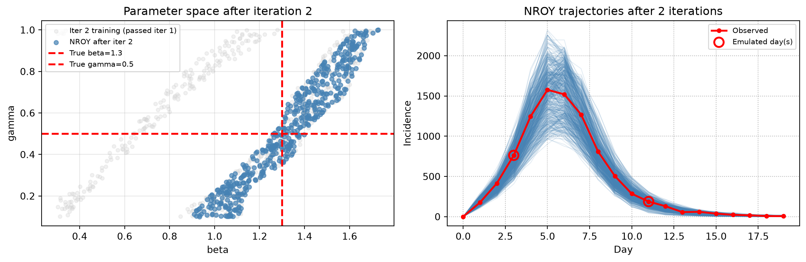
NROY samples after iteration 2: 500
beta range: [0.927, 1.706]
gamma range: [0.100, 0.999]
True beta in plausible region: Yes
True gamma in plausible region: Yes
engine.commit_step()print(f"Iteration 2 committed. Total iterations: {engine.current_iteration}")
Iteration 2 committed. Total iterations: 2
Iteration 3: Multiple Emulators Per Wave
A single wave can train one emulator per output — the engine loops over the output list and produces a separate emulator for each one. Implausibility is then computed per-emulator and the maximum across all outputs is used to filter samples, so a point must be consistent with every constraint to survive.
Assign a list of output names to engine.feature_selection to activate this. Here we emulate three time-points simultaneously:
engine.feature_selection = ["incidence_3", "incidence_6", "incidence_11"]print("Running iteration 3 with 3 simultaneous emulators...")result_3 = engine.step()print(f" Samples generated: {len(result_3.samples)}")print(f" NROY fraction: {result_3.nroy_fraction:.1%}")print(f" Outputs emulated: {result_3.emulated_outputs}")print(f" Emulators trained: {len(result_3.emulators)}")# Save training data for offline debuggingresult_3.samples.to_csv("/tmp/wave3_samples.csv", index=False)result_3.simulation_results.to_csv("/tmp/wave3_sim_results.csv", index=False)print("\nSaved /tmp/wave3_samples.csv and /tmp/wave3_sim_results.csv")
If one emulator has a low R² it will add noise to the implausibility calculation — potentially excluding valid parameter regions. Call engine.drop_emulator_from_pending() to remove it from the pending wave without discarding the other emulators or re-running any simulations. The remaining emulators are committed as normal.
API note:drop_emulator_from_pending() must be called after step() but before commit_step(). Calling it after committing raises a RuntimeError.
R2_THRESHOLD =0.7dropped = []for feature in result_3.emulated_outputs: r2 = metrics_3[feature].get("r2", 1.0)if r2 < R2_THRESHOLD: engine.drop_emulator_from_pending(feature) dropped.append(feature)print(f"Dropped '{feature}' (R²={r2:.3f} < {R2_THRESHOLD})")ifnot dropped:print("All emulators meet the R² threshold — keeping all three.")# Capture NROY samples BEFORE committing — after commit, pending is clearedpending_4 = engine.get_pending_next_samples()engine.commit_step()print(f"\nIteration 3 committed with {len(result_3.emulated_outputs) -len(dropped)} emulators.")print(f"Total committed iterations: {engine.current_iteration}")
Dropped 'incidence_3' (R²=0.539 < 0.7)
Iteration 3 committed with 2 emulators.
Total committed iterations: 3
Parameter Space and Trajectories After Iteration 3
# pending_4 = samples that passed ALL 3 waves' emulators (captured before commit)fig, axes = plt.subplots(1, 2, figsize=(12, 4))# Left: parameter space — show progressionax = axes[0]ax.scatter(result_2.samples["beta"], result_2.samples["gamma"], alpha=0.3, s=10, color="lightgray", label="Iter 3 training (passed iters 1+2)")ax.scatter(pending_4["beta"], pending_4["gamma"], alpha=0.7, s=20, color="steelblue", label="NROY after iter 3")ax.axvline(beta_true, color="red", linestyle="--", linewidth=2, label=f"True beta={beta_true}")ax.axhline(gamma_true, color="red", linestyle="--", linewidth=2, label=f"True gamma={gamma_true}")ax.set_xlabel("beta")ax.set_ylabel("gamma")ax.set_title("Parameter space after iteration 3")ax.legend(fontsize=7)ax.grid(True, alpha=0.3)# Right: trajectories from NROY samplesax = axes[1]sims_final = sir_model_wrapper(pending_4)days = np.arange(sims_final.shape[1])obs_vals = data["incidence"].valuesfor row in sims_final.values: ax.plot(days, row, color="steelblue", alpha=0.15, linewidth=0.8)ax.plot(days, obs_vals, "ro-", linewidth=2, markersize=4, label="Observed")# Highlight all emulated time-points across all 3 iterationsall_emulated =set()for r in [result_1, result_2, result_3]: all_emulated.update(int(f.split("_")[1]) for f in r.emulated_outputs)all_emulated =sorted(all_emulated)ax.scatter(all_emulated, obs_vals[all_emulated], s=100, zorder=5, facecolors="none", edgecolors="red", linewidths=2, label="Emulated day(s)")ax.set_xlabel("Day")ax.set_ylabel("Incidence")ax.set_title("NROY trajectories after 3 iterations")ax.legend(fontsize=8)ax.grid(linestyle=":")plt.tight_layout()plt.show()print(f"NROY samples after iteration 3: {len(pending_4)}")print(f" beta range: [{pending_4['beta'].min():.3f}, {pending_4['beta'].max():.3f}]")print(f" gamma range: [{pending_4['gamma'].min():.3f}, {pending_4['gamma'].max():.3f}]")
print("FINAL HISTORY MATCHING RESULTS")print("="*50)print(f"True parameters: beta={beta_true}, gamma={gamma_true}, R0={beta_true/gamma_true:.2f}")print()# pending_4 = NROY after all 3 waves (captured before final commit)print(f"Plausible ranges after {engine.current_iteration} iterations:")print(f" beta: [{pending_4['beta'].min():.3f}, {pending_4['beta'].max():.3f}]")print(f" gamma: [{pending_4['gamma'].min():.3f}, {pending_4['gamma'].max():.3f}]")R0_final = pending_4["beta"] / pending_4["gamma"]print(f" R0: [{R0_final.min():.2f}, {R0_final.max():.2f}]")print()# NROY fraction per waveall_results = engine.get_all_results()print("NROY fraction per wave:")for r in all_results:print(f" Wave {r.iteration}: {r.nroy_fraction:.1%}")print()print(f"Engine statistics:")print(f" Total samples generated: {engine.samples_generated}")print(f" Total samples accepted: {engine.samples_accepted}")print(f" Final acceptance rate: {engine.acceptance_rate:.3f}")print(f" Emulators trained: {engine.emulators_trained}")beta_reduction = (parameter_bounds["beta"][1] - parameter_bounds["beta"][0]) / (pending_4["beta"].max() - pending_4["beta"].min())gamma_reduction = (parameter_bounds["gamma"][1] - parameter_bounds["gamma"][0]) / (pending_4["gamma"].max() - pending_4["gamma"].min())print()print(f"Parameter space reduced:")print(f" beta space reduced by factor of {beta_reduction:.1f}x")print(f" gamma space reduced by factor of {gamma_reduction:.1f}x")
FINAL HISTORY MATCHING RESULTS
==================================================
True parameters: beta=1.3, gamma=0.5, R0=2.60
Plausible ranges after 3 iterations:
beta: [1.077, 1.647]
gamma: [0.292, 0.818]
R0: [2.00, 3.69]
NROY fraction per wave:
Wave 1: 10.9%
Wave 2: 5.7%
Wave 3: 2.7%
Engine statistics:
Total samples generated: 32282
Total samples accepted: 3000
Final acceptance rate: 0.077
Emulators trained: 5
Parameter space reduced:
beta space reduced by factor of 4.7x
gamma space reduced by factor of 1.7x
import tempfile, osdiag_dir = tempfile.mkdtemp(prefix="hm_diagnostics_")for result in all_results: result.save(diag_dir, all_results=all_results)print(f"\nDiagnostics saved to {diag_dir}/")for f insorted(os.listdir(diag_dir)):print(f" {f}")
Diagnostics saved to /tmp/hm_diagnostics_ff_yfm26/
wave1
wave2
wave3
Summary
This notebook demonstrated the manual history matching workflow:
Setup: imported SIR and generate_observed_data from model.py
Iteration 1: emulated incidence_11 (descending limb), ran engine.step(), inspected emulator diagnostics and parameter space, then committed
Iteration 2: switched to incidence_3 (rising limb), repeated the step-inspect-commit cycle — this breaks the β/γ degeneracy left by iteration 1
Iteration 3: selected three outputs simultaneously (incidence_3, incidence_6, incidence_11), inspected per-output R² metrics, dropped any poor-quality emulators with engine.drop_emulator_from_pending(), then committed
Key API points: - engine.step() runs one iteration and returns an IterationResult - engine.commit_step() accepts the result and advances the iteration counter - engine.revert_step() discards the pending result (re-runs simulations on next step()) - engine.feature_selection = [...] sets outputs for the next wave — assign a list of any length to train multiple emulators in one wave - result.nroy_fraction — fraction of the prior that remains plausible after this wave - result.get_emulator(name) gives access to individual emulator diagnostics - result.get_emulator_quality_metrics() returns R², MSE, and training size per output - result.save(fig_dir, all_results) writes per-output diagnostic figures + metrics JSON - engine.drop_emulator_from_pending(output) removes one emulator from the pending wave before committing — useful when an output’s emulator has a poor fit